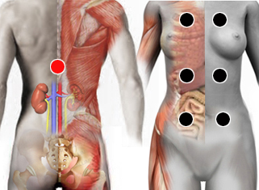

Asma alérgico
Pares
frente del cuerpo - suprerrenales
pulmones - suprarrenales
timo - axila
suprarrenal - timo

Generalidades:
Es muy rara encontrarla. Dificultad respiratoria causada por la contricción de las vías respiratorias (bronquios) Inflamación del epitelio bronquial con liberación de sustancias inflamatorias. Las suprarrenales dejan de producir corticoides. Todo el frente del torax se vuelve polaridad (-) y la suprarrenal (+).
Nota: Las estimulación magnética de las glándulas suprarrenales favorece la producción de corticoesteroides, regulando la función del sistema inmune y reduciendo los procesos inflamatorios.